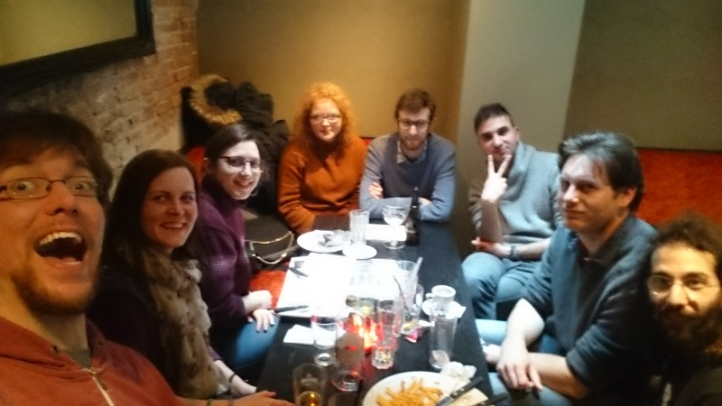
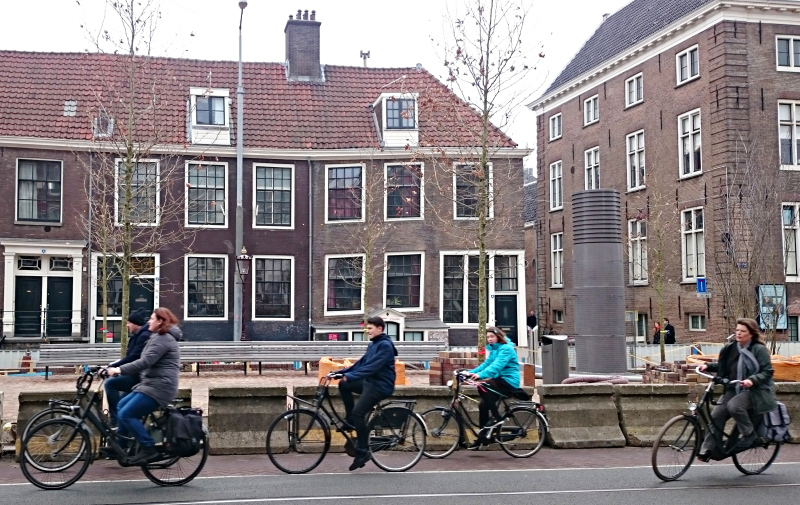
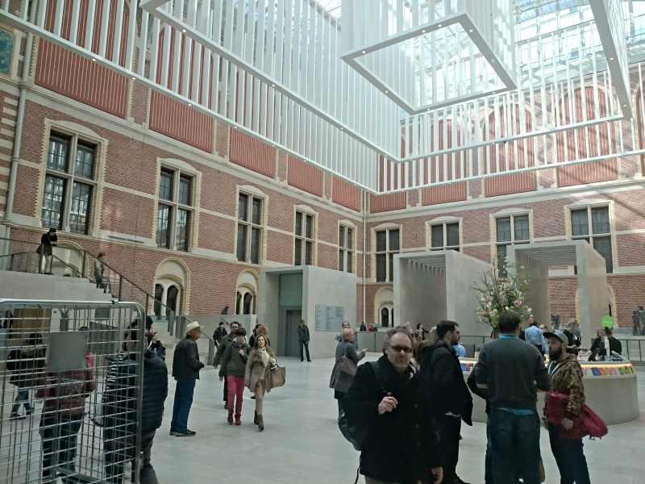

March 2018 — Haarlem / Amsterdam, Netherlands
Dear report!
So here we are again. You and me. And the internet. The third meeting is over. My hands are still a bit shaky... The train is starting to roll out of Amsterdam Centraaarghl, about to take me back home to normal land. I'm looking out of the window with mixed feelings, still a bit confused about everything that happened. Will I ever be the same person again? Will I ever be able to look a bike in the eye without a sudden rush of panic and terror? Time will tell.
So. Let's get the most important question out of the way right at the start: Are the Netherlands weird?
No!
Of course not!
Why would you even...
think that!
Now that that's clear, let's begin at the beginning.
Thursday
I met with Tiemen in his home town Utrecht. And I can guarantee that you pronounced "Utrecht" wrong in your head when you just read it. Except if you're one of them... Anyway. I really like Tiemen. He's a great friend. Except I hate him because he's taller and better than me. Together we went to Schipol airport to pick up Cristina. A quest that should teach us the first lesson on our journey: If you want to surprise-pickup someone from the airport, be on time. Also, maybe tell them beforehand. You sacrifice some of the surprisiness but you gain likelihood of finding each other. But of course we managed. We always do. We are organizers!
There we were. United. Old friends. Titans of organization. Mountains. Nothing can shake us up anymore. Or so we thought. I must say that I missed a bit the excitement that I felt before the other two meetings. No more "Oh my god oh my god oh my god... Will this go well? Or will it be a catastrophe and everyone will hate us? What am I even doing here? What was I thinking... those are people from the internet!!!" But no. That part is gone. We know the drill. We know each other, we know most of the people who come, we know it's going to be boringly awesome, no matter how hard we screw up. Like parents, about to have a third child. At least that's how I picture that.
Our first goal was the Hello I'm Local hostel in Haarlem. Hello Hello I'm Local hostel, we're tourists. The dude there was so nice and friendly, it was creepy. Due to some supreme organization on our side, Cristina stayed at another hostel but the dude was still ridiculously kind towards her, offering her water and asking about that other hostel. Maybe there's some open relationship stuff going down between the hostels, I don't know. I was starting to fear for my kidneys.
We strolled around Haarlem a little bit. A nice city. Like everything else in those stupid Netherlands, it was nice. Even the weather was a bit nice. Well, for Netherland standards. But still nicely nice. So we decided to go to the beach. The weather was less nice there tho, but that didn't stop us.
A swim was out of the question however. The water was so cold, it even outcolded my German soul. So we headed back to Haarlem Downtown. At the marketplace, Tiemen introduced Cristina to a local delicacy: raw herring. She didn't like it too much at all.
Which was most fortunate for this innocent bystander

, who was probably totally surprised because that does probably not totally happen all the time.
Next we went to a church. Below the big stones that comprised the floor, people were buried. And we walked on them.
I can imagine more pleasant places for my eternal slumber but whatever tickles their boat.
Enough adventure for one day! Back to the hostel. There was a fireplace and live music inside it.
(That picture didn't show the live music though). That was like, I couldn't even...
The others still went to a café together because that's what you do. I didn't, I wasn't feeling good. I hate traveling and meeting awesome people. My belly don't take it well. I bet they were talking about me the whole time. Meanwhile, our first guest arrived. A new face from Italy. Smug Italians with their fantastic food, I hate them.
All in all, a good day though. A nice start for our meeting.
Friday
Representatives from all over everywhere started to flood in, representing the shit out of their nations. France, Sweden, Greece, Belgium, US. For me as a German it can be difficult from time to time to deal with so many foreigners all at once, as my xenophobia reserves are not unlimited. But I think I managed.
We began by some light market strolling. Here's to stereotypes!
Our first real program point on Friday was
The Museum Vrolik Academic Medical Center
which is a collection of... being afraid that I don't describe this in a politically correct way, I will just quote that website: medical collection of pathological specimens, anomalous embryos, odd skulls and bones. The whole experience was very bizarre. However, how interesting it was to look at all these things outweighed how creepy it was. In everyday life, all the animals and humans seem to me like special fine-tuned perfect beings, designed to fit into the world. But seeing those dead bodies with different number-of-eyes-to-number-of-heads or number-of-heads-to-number-of-torsos ratios than "normal" just showed how nature is also kinda exploring here and there, you know, doing some sketches, trying some new stuff, see what works out. And all the normal creatures are no different from those abominable mutations except that they worked and those did not.
Anyway. I would love to put some pics here but there was a sign that kindly asked to not take any photos out of respect for the deceased. I found that a bit odd since they were selling fridge magnets with some pictures of some of the parts of some of those people but I'm sure those people happily signed up for that. However, as it is societically acceptable to disrespect animals in every possible way, I took pictures of them:
And there was even a cute little pickled monkey!
Just look how cute he is! Being all dead and crippled into that creepy glass of nightmares ^^. Oh by the way, there are pictures of the human parts as well on Google images. That preserves respect I guess. If your guts can take it (seriously!), click here. A very interesting experience and very appropriate for our kind of crowd.
All these horrible exhibits sparked our appetite and we went for a little snack to a little bar.
And there it was again. That special flavor of atmosphere. Being international, sitting at places, eating foods and talking about matters. I'll skip over this part henceforth. You get it.
Evening: Nerd Nite
Oh yeah, that's right. We went to nerd nite. It's an event that's going down every two months or so at the CREA cultural student center. Two talks were given. "What it would take for Artificial Intelligence to take off in hospitals" by Lydia Mennes and "Don't fear the fat!" by Bas Robben. Yeah yeah, very interesting. But guess what: We were also invited to give a little presentation about our little thing, and no, not just because Tiemen is friends with the organizer which he is but this has nothing to do with this. So we talked about WaitButWhy and our European community in front of what felt like a godzillion people! We're famous now! We are a thing now! And the presentation will be on YouTube, they said. Pentillions of people are going to watch it!

We spent the evening in our new hood, the StayOkay hostel. The Dutch seem to be very humble people. I'd rather call my hostel chain StayFabulous or StayForever, but I'm sure those people knew what they were doing. A very cool hostel with very nice staff. They were there for us when we needed them and we actually really really needed them. Big thanks!
Saturday
Oh man... That Saturday... What can I say...
It started out with a by now nice tradition. You know us. No Generation Why meeting without
A Guided Tour
. Through Haarlem. An authentic Haarlemer from back in the days who already knew Haarlem during those times guided us.

A bit odd was that he mainly guided us to beautiful private backyards, surrounded by little houses where only women lived.
It's not like I suspect anything here. This is just how things are there. The Netherlands are after all a whole nother culture, incredibly weird and creepy, different from the German norm.
The tour ended in
The Adriaan Windmill
, the landmark of Haarlem. Where we were handed to another guide,
guiding us through the windmill. And it was beautiful. There is just something about massive mechanical wood constructions... They have pureness and hand-craftedness of old times. Ancient advanced technology. So many creative engineering solutions in there. It just makes you wanna work there forever.
Inside the big wooden mill were little wooden mill models, demonstrating how all the parts function. And they were all functioning. And you could play with them. And there was also this thing:
The big windmill itself is also fully functional. It is operated by a team of volunteers who are happy to explain stuff and answer questions.
The volunteeress who was explaining stuff in the video asked me later if I wanted to help her de wieken van de windmolen afzeilen. Of course I wanted and of course it was super cool to operate that genius piece of engineering and of course I immediately had a crush on her that I will never recover from.
Just adembenemend!
In the evening we made
A Fire
in the yard of the hostel. Actually we didn't make it, it was already going and it wasn't our fire, seems a fire is standard program in Haarlem hostels which I highly approve of. Very nice campfiry atmosphere, a very memorable evening. For some of us more, for others of us even more. Why? Oh, no special reason. It was just a regular campfire, nothing out of the ordinary. It was fine. Everything was FINE. Stop asking.
Sunday
we took a
Tourist Boat Trip
on one of those touristy boats.

Boating tourists around is a huge business in Amsterdam, so it must be amazing, right? Welll... let's say – you guessed it – it was nice.
Being kind of exhausted from being boated around, we went for a chill on the rooftop of the Nemo Museum.
We had a nice view over Amsterdam from there. Was nice. It's probably boring af for you to read but it just happened so it goes into the report, ok?! Here, look at the boring nice view!
To make up for it tho, here's a fun fact: Apparently the Amsterdam folks thought: "All the other fancy towns have fancy metros! We want one as well!" And so they set out to build one. Unfortunately Amsterdam rests on very sandy ground. So building a metro there is not straightforward and requires some sacrifices as you can maybe spot in the next picture.
(Hint: It's not the cyclists, it's the houses, you stupy :P It was just impossible to take pictures without cyclists.)
In the evening we met with two old friends from Amsterdam who were at the Berlin meeting also. I missed them.
I hate them. We strolled through parks, ate at places and did this amazing crisp groupfie. It's just that it was late and we were all already a bit blurry at the time.
Monday
was supposed to be museum day. However, it turned out to be museum entrance hall day.
Most museums were rather expensive and we decided to not actually go in. We rather did some chilling in the arithmetic mean of all of them, so we could kinda absorb kinda all their vibes so to say.
Also, many museums were closed on Mondays, so our options were a bit restricted. Tiemen, Greece and me decided to visit a rather particular Museum that wasn't for everyone.
The Museum of Prostitution
Shit, was that interesting! It was an old brothel which was turned into a museum. We were shown around by the recorded voice of a prostitute with Russian background. She sounded very authentic and had crazy stories to tell. And we learnt a lot about prostitution, a field that not too many people are too open-minded about. And that museum approaches the topic from all angles: the dark sides, the normal sides, some advice, the financial sides, the dangers for the prostitutes and the dangers for the clients (I didn't mean to tastelessly compare the last two points). My favorite part was a little room with red light where you could sit on a bar chair in front of a television that looked like a window.
{kind=link}
{kind=link}
{kind=link}
{kind=link}
{kind=link}
{kind=link}
Creepy dudes were passing by, checking you out, judging you, bargaining about your price and just being overall creepy and horrible. It's a fascinatingly awful experience that does a good job at making you understand what this must be like. My sincere respect to those women.
Sooooo. The end was near. And as always, we did some reflecting discussions on the meeting.
Final Remarks
And I will be honest with you here, report. It was an awesome meeting, but it didn't live up to the meetings before. All three of us organizers felt it. Was it because the excitement of all this being new and crazy was fading? Did we have too high expectations because the other meetings were so fantastic? We don't know. One thing I personally noticed for myself was that the discussions – despite being all deep and stuff – lacked a bit substance. We were just discussing deep stuff because we were among people with whoms discussing deep stuff is awesome, not because there was deep stuff there that needed to be discussed. But maybe that's just how I felt and the other attendants disagree and now this report contains this disappointing note just because I'm the one who wrote it. But I guess we'll have to deal with that then.
Still. We have run out of steam and we have decided that this was our last meeting. As we all learned from StarWars, it's better to have a nice trilogy that will always be remembered as an awesome feat of epicness than being in denial, trying to struggle on and squeeze fun out of it when there is just nothing more there. Those were fantastic experiences, thanks to everyone who took part in this! The best of luck to all of you!
Haaaahaha! Got you there, didn't I! Of course we're not giving this up, are you crazy? But we really want to change something. Just meeting just doesn't cut it anymore. We want more better. And we already have some ideas. We want to try to setup web meetings to keep the community more alive and we are also thinking about giving people the opportunity to present some stuff that they care about or that they want to share at our meetings, giving the whole thing kinda like a bit more TED kinda flavor. Let's see.
Within the last year we have been posting twice as many articles as WaitButWhy has, so we have obviously outgrown them by a factor of two now. Still, we will not forget that the existence of our huge flourishing community was sparked by their little website thing they had going on a while ago. We will always keep you guys in our hearts!
Thank you!